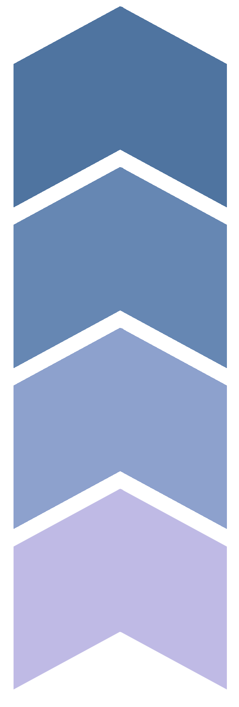

left and right arrows will return you to the last and next page respectively.


left and right arrows will return you to the last and next page respectively.
Some facts about Neptune
Neptune has an average surface temperature of -214°C – approximately -353°F.
Neptune spins very quickly on its axis. The planets equatorial clouds take 18 hours to complete one rotation. The reason this happens is that Neptune does not have a solid body.
Neptune Neptune is the Roman God of the Sea. In Greek, Neptune is called Poseidon.
Neptune has the second largest gravity of any planet in the solar system – second only to Jupiter.
Neptune has 14 known moons. The largest of these moons is Titan – a frozen world which spits out particles of nitrogen ice and dust from below its surface. It is believed that Titan was caught by the immense gravitational pull of Neptune and is regarded as one of the coldest worlds in our solar system.
Interior
The interior of Neptune, similar to that of Uranus, is made of two layers: a core and mantle. The core is rocky and estimated to be 1.2 times as massive as the Earth. The mantle is an extremely hot and dense liquid composed of water, ammonia and methane. The mantle is between ten to fifteen times the mass of the Earth. Although Neptune and Uranus share similar interiors, they are, however, quite distinct in one way. Whereas Uranus emits only about the same amount of heat that it receives from the Sun, Neptune emits nearly 2.61 times the amount of the sunlight it receives. To place this in perspective, the two planets’ surface temperatures are approximately equal, yet Neptune receives only 40% of the sunlight that Uranus does. Additionally, this large internal heat is also what powers the extreme winds found in the upper atmosphere.Neptune Facts.
Stewart, Suzy. Neptune Facts. The Planets. Retrieved from https://theplanets.org/neptune/.